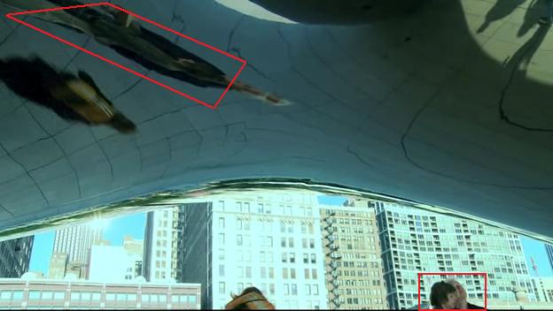

Contemplating The Bean
Greetings Fans! Carol's TV appearances continue as she could be seen once again in The Beast. In the beginning of episode 4, Carol can be seen contemplating The Bean (or Cloud Gate, if you prefer), as the woman with a backpack runs through while talking on a cell phone.

Carol (left) contemplates her reflection in The Bean.
A few seconds later, she can be glimpsed again (although only barely) as Travis rides through on his stolen bicycle. Interestingly, you can also see her reflection overhead, fun house-style.

As both the backpacked woman and Travis leave the scene, you can glimpse Carol's disembodied head at the bottom of the screen, and distorted reflection above. Next week in episode 6 of The Beast, and both Carol and I (and my car) may make appearances. Stay tuned!
If you haven't seen Key For Two yet, you only have four more chances! Why not bring your sweetheart to see a hilarious show about infidelity to make up for the lame Valentine's Day gift you got them? Don't miss out!
Originally published on the Blogspot site